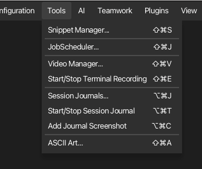
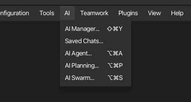
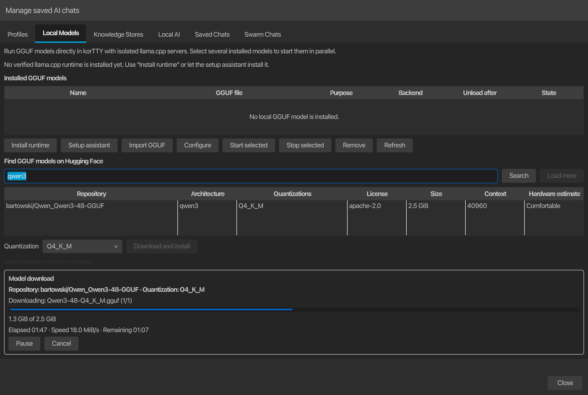

Menüreferenz¶
Jedes Element in der Menüleiste von korTTY, mit seiner Tastenkombination (falls definiert) und ihrer Funktion. Die Menüleiste kann mit Ctrl+Shift+L ausgeblendet und wieder angezeigt werden, indem Sie mit der rechten Maustaste auf das Terminal oder die Statusleiste klicken.
Datei¶
| Element | Verknüpfung | Beschreibung |
|---|---|---|
| Neuer Tab | Ctrl+T | Öffnen Sie die Schnellverbindung in einem neuen Terminal-Tab |
| Neue Inkognito-Sitzung… | Öffnet die Schnellverbindung; der Tab, den sie öffnet, ist eine Inkognito-Sitzung, egal was die Verbindung festlegt. Ausgegraut, wenn Ihre Organisation Inkognito-Sitzungen verbietet | |
| Tab umbenennen… | Dem aktiven Terminal-Tab statt des Verbindungsnamens oder des Titels, den seine Shell gesetzt hat, einen eigenen Namen geben; ein leerer Name zeigt diesen wieder an. Verfügbar, solange ein Terminal-Tab aktiv ist. Siehe Arbeiten mit Tabs | |
| Tab schließen | Ctrl+W | Schließen Sie die aktive Terminal-Registerkarte |
| Andere Tabs schließen | Alle anderen Tabs des aktuellen Fensters schließen; der aktive Tab bleibt geöffnet. Fragt einmal nach, wenn einige der zu schließenden Terminals geteilte Bereiche oder einen laufenden Befehl haben. Derselbe Eintrag steht im Rechtsklickmenü eines Terminal-Tabs. Siehe Arbeiten mit Tabs | |
| Tabs rechts davon schließen | Die Tabs hinter dem aktiven Tab schließen, der geöffnet bleibt. Fragt wie „Andere Tabs schließen“ nach. Derselbe Eintrag steht im Rechtsklickmenü eines Terminal-Tabs | |
| Alle Tabs schließen | Alle Tabs im aktuellen Fenster schließen; „Geschlossenen Tab wieder öffnen“ holt die Terminal-Tabs zurück | |
| Geschlossenen Tab wieder öffnen | Ctrl+Alt+Shift+T | Den zuletzt geschlossenen Terminal-Tab (oder die Tabs, die ein Befehl gemeinsam geschlossen hat) mit einer neuen Sitzung wieder öffnen; ausgegraut, solange es nichts wieder zu öffnen gibt. Derselbe Eintrag steht im Rechtsklickmenü eines Terminal-Tabs. Siehe Arbeiten mit Tabs |
| Zuletzt geschlossen ▸ | Was Sie geschlossen haben, das Neueste zuerst, auch vor dem letzten Beenden von korTTY: ein Tab, die Tabs, die ein Befehl gemeinsam geschlossen hat, oder Fenster: … für die Tabs eines geschlossenen Fensters. Wählen Sie einen Eintrag, um ihn wieder zu öffnen; Liste leeren leert die Liste | |
| Neues Fenster | Ctrl+Shift+N | Öffnen Sie ein zusätzliches, unabhängiges Hauptfenster |
| Fenster schließen | Ctrl+Shift+W | Schließen Sie das aktuelle Fenster |
| Projekt öffnen… | Ctrl+O | Ein gespeichertes Projekt wiederherstellen: Sein erstes Fenster ersetzt die Tabs dieses Fensters, jedes weitere Fenster öffnet sich in einem neuen Fenster, und jedes Fenster erhält seine Position, Größe, Tabs und seinen aktiven Tab zurück. Siehe Fenster |
| Zuletzt verwendet ▸ | Unter Verbindungen die gespeicherten Verbindungen, die Sie zuletzt verwendet haben (bis zu 10, die neueste zuerst, wie oben in der Schnellverbindung), die jeweils einen Tab öffnen, der sich wie Verbinden im Connection-Manager anmeldet; unter Projekte die Projekte, die Sie zuletzt geöffnet oder gespeichert haben (bis zu 10), gefolgt von den übrigen Projekten in ~/.kortty/projects, die sich jeweils wie Projekt öffnen… öffnen. Dateien, die nicht mehr existieren, werden ausgelassen. Liste leeren leert das Menü, ohne eine Verbindung oder eine Projektdatei zu löschen. Siehe Zuletzt verwendet |
|
| Projekt speichern… | Ctrl+S | Speichern Sie jedes offene Fenster mit seiner Position, Größe und seinen Tabs als Projekt (.kortty) |
| Vorherige Sitzung wiederherstellen | Öffnen Sie die Fenster und Tabs wieder, die korTTY vor diesem Start geöffnet hatte und die es während des Betriebs selbst speichert: Das erste Fenster öffnet sich in diesem Fenster, wenn es keine Tabs hat, sonst in einem neuen Fenster, und jedes weitere Fenster in einem neuen Fenster; Tabs, die ein Passwort, einen neuen temporären SSH-Schlüssel oder den gesperrten Tresor brauchen, warten in der Wiederherstellungsleiste. Ausgegraut, solange es keine vorherige Sitzung gibt und nachdem Sie sie einmal wiederhergestellt haben. Siehe Vorherige Sitzung | |
| Backup erstellen… | Ctrl+Shift+B | Erstellen Sie ein verschlüsseltes Backup (ZIP-Passwort oder GPG) |
| Sicherung importieren… | Wiederherstellung aus einer Sicherungsdatei | |
| Aufhören | Ctrl+Q | Beenden Sie korTTY |
Verbindungs-Einträge (Schnellverbindung, Verwalten/Importieren/Exportieren von Verbindungen) befinden sich im Verbindungen-Menü.
Bearbeiten¶
| Element | Verknüpfung | Beschreibung |
|---|---|---|
| Schneiden | Ctrl+X | Ausschneiden (deaktiviert für Anschlusslaschen) |
| Kopie | Ctrl+C | Kopieren Sie die Terminalauswahl |
| Paste | Ctrl+V | In das Terminal einfügen |
| Suchen… | Ctrl+F | Suche im aktiven Tab (Terminal-Scrollback oder geöffneter Editor). Auf Windows und Linux sendet ein fokussiertes Terminal Ctrl+F an die Shell, also öffnen Sie Suchen aus diesem Menü oder dem Rechtsklick-Menü des Terminals dort |
| Schnellauswahl | Ctrl+Shift+Space | Jede Webadresse, jeden Pfad, jede E-Mail-Adresse, UUID, IP-Adresse, jeden Git-Hash und jede Zahl mit vier oder mehr Ziffern im fokussierten Terminalbereich sowie jeden Treffer eigener Muster mit einem Kürzel versehen; tippen Sie ein Kürzel, um dessen Text zu kopieren, oder Shift und das Kürzel, um eine Web- oder E-Mail-Adresse oder in SSH- und lokalen Shell-Tabs einen Dateipfad im Snippet-Editor zu öffnen. Außerhalb von Terminal-Tabs deaktiviert, siehe Schnellauswahl |
| Vorheriger Prompt | Ctrl+Shift+Up | Den fokussierten Terminalbereich zum Prompt vor dem aktuellen scrollen, anhand der Markierungen einer für die Shell-Integration eingerichteten Shell; geht das nicht, nennt die Statusleiste den Grund. Außerhalb von Terminal-Tabs deaktiviert |
| Nächster Prompt | Ctrl+Shift+Down | Den fokussierten Terminalbereich zum nächsten Prompt scrollen, den seine Shell markiert hat, oder nach dem letzten zurück ans Ende. Außerhalb von Terminal-Tabs deaktiviert |
| Letzte Ausgabe auswählen | Auswählen, was der zuletzt beendete Befehl im fokussierten Terminalbereich ausgegeben hat, anhand der Markierungen einer für die Shell-Integration eingerichteten Shell; die Statusleiste meldet, was ausgewählt wurde oder warum nichts. Außerhalb von Terminal-Tabs deaktiviert | |
| Letzte Ausgabe kopieren | In die Zwischenablage kopieren, was der zuletzt beendete Befehl im fokussierten Terminalbereich ausgegeben hat, ohne die Auswahl zu ändern. Außerhalb von Terminal-Tabs deaktiviert |
Verbindungen¶
| Artikel | Beschreibung |
|---|---|
| Schnellverbindung… | Stellen Sie eine Verbindung zu einem Host her, ohne zu speichern |
| Verbindungen verwalten… | Öffnen Sie den Connection-Manager (Struktur, Suche, Bearbeiten) |
| Importieren… | Verbindungen von anderen Clients importieren |
| Export… | Exportverbindungen |
| SFTP-Client… | Öffnen Sie den Dual-Panel-SFTP-Dateimanager |
| SFTP hier öffnen | Öffnen Sie den SFTP-Dateimanager über die eigene SSH-Sitzung des fokussierten Terminalbereichs, in dem Ordner, in dem sich dessen Shell befindet |
Sicherheit¶
| Element | Verknüpfung | Beschreibung |
|---|---|---|
| Tresor entsperren… | Das Master-Passwort eingeben, um gespeicherte Geheimnisse zu entsperren, wenn die Abfrage beim Start ausgeschaltet ist (ausgegraut, solange der Tresor entsperrt ist) | |
| Zugangsdaten… | Ctrl+Shift+M | Gespeicherte Zugangsdaten verwalten (verschlüsselt). Die Tastenkombination funktioniert auch, wenn ein Terminal den Fokus hat |
| GPG-Schlüssel… | Ctrl+Shift+G | GPG-Schlüssel verwalten, die für die Backup-Verschlüsselung verwendet werden |
| SSH-Schlüssel… | Ctrl+Shift+I | SSH-Schlüssel und Passphrasen verwalten |
| Bekannte Hosts… | Vertrauenswürdige SSH-Hostschlüssel prüfen, durchsuchen und entfernen |
Konfiguration¶
| Artikel | Beschreibung |
|---|---|
| Globale Einstellungen… | Öffnen Sie den globalen Einstellungsdialog (alle Registerkarten) |
| System-Ruhezustand verhindern | Aktivieren Sie unter macOS und Windows die aktivitätsbasierte Verhinderung des System-Ruhezustands. Der Computer bleibt nur dann wach, wenn ein Terminal angeschlossen ist, ein aktivierter Scheduler-Job in Zukunft ausgeführt wird oder ausgeführt wird oder eine KI-Anfrage ausgeführt wird. Wenn keine dieser Aktivitäten erfolgt, bleibt der Systemschlaf auch dann verfügbar, wenn das Element überprüft wird. Der Display-Ruhezustand ist davon nicht betroffen. Unter Linux ist das Element sichtbar, aber deaktiviert. |
Für jede einzelne Einstellung siehe die Settings-Referenz .
Tools¶

| Artikel | Beschreibung |
|---|---|
| Snippet-Manager… | Erstellen, bearbeiten, organisieren, senden und exportieren Sie Befehls-Snippets in einem Arbeitsbereich: die Bibliothek und die Snippets, die Sie als Tabs bearbeiten, jeweils mit ihrer gespeicherten Vollständigen Code-Analyse |
| JobScheduler… | Hintergrundbefehl/Snippet/KI-Agent/KI-Swarm/SFTP/Rsync-Jobs planen |
| Videomanager… | Verwalten Sie Terminalaufzeichnungen und exportieren Sie sie über WebM/MKV ffmpeg |
| Terminalaufzeichnung starten/stoppen | Aufzeichnung des aktiven Terminals umschalten (Ctrl+Shift+E) |
| Sitzungsjournale… | Manage session journals: Suchen, Öffnen, Umbenennen, Beschreiben, Exportieren und Löschen sowie Festlegen der Journaloptionen (Ctrl+Alt+J) |
| Sitzungsjournal starten/stoppen | Toggle the session journal of the active terminal tab; starting mid-session imports the existing scrollback (Ctrl+Alt+T) |
| Journal-Screenshot hinzufügen | Erstellen Sie einen Schnappschuss des aktiven Terminals in das laufende Sitzungsjournal (Ctrl+Alt+C) |
| Sitzungsprozesse… | Listet die Session-Worker isolierter SSH-Sitzungen mit Speicher, CPU-Anteil und Laufzeit und beendet einen davon |
| ASCII-Art… | Zwei Tabs in einem Dialog: Text-Banner rendert Text als FIGlet-Banner in mehreren Schriftstilen, KI-Bild lässt ein KI-Profil ein Thema als ASCII-Art zeichnen |
Die drei Einträge im Sitzungsjournal bleiben sichtbar, werden jedoch deaktiviert, wenn eine Unternehmensrichtlinie die Funktion des Sitzungsjournals ablehnt.
AI¶

| Artikel | Beschreibung |
|---|---|
| KI-Manager… | Manage AI profiles, integrated GGUF models, RAG knowledge stores, the AI Skills library, and Text/Coding roles |
| Gespeicherte Chats… | Öffnen Sie die gespeicherten KI-Chatgespräche direkt in ihrem eigenen Fenster; ein erneutes Aufrufen bringt das vorhandene Fenster nach vorne |
| AI Agent… | Öffnen Sie den Terminal AI Agent |
| KI-Planung… | Öffnen Sie den KI-Planungsworkflow |
| KI-Schwarm… | Senden Sie eine KI-Aufgabe an viele Server und vergleichen Sie die Antworten (Ctrl+Alt+S) |
KI-Manager wird als modales Fenster geöffnet, sodass es sichtbar bleiben kann, während Sie das Hauptfenster verwenden. Durch einen erneuten Aufruf wird derselbe Manager für dieses Hauptfenster wiederhergestellt und fokussiert, anstatt ein Duplikat zu erstellen. Seine fünf Abschnitte sind Profile (Verbindungsmodus, Modell, Eingabeaufforderungsvoreinstellung, Reasoning, Internetzugang und Token-Budget), Lokale Modelle (Suchen/Herunterladen/Importieren von GGUF-Modellen), Wissensspeicher (RAG-Quellen), KI-Skills (die Fertigkeitsbibliothek, aus dem globalen Einstellungsdialog hierher verschoben) und Lokale KI (Text-/Codierungs-/Einbettungsrollen und die lokale Laufzeit). Der geöffnete primäre Abschnitt bleibt durch eine fette Akzentunterstreichung gekennzeichnet, nachdem Sie den Fokus auf seine Tabellen, Felder oder Schaltflächen verschoben haben:

Plugins¶
| Artikel | Beschreibung |
|---|---|
| Terminal-Effekte… | Terminal-Effekt-Plugins aktivieren/deaktivieren, konfigurieren, importieren/exportieren |
Ansicht¶
| Element | Verknüpfung | Beschreibung |
|---|---|---|
| Befehlspalette… | Ctrl+Shift+P | Öffnen Sie die Befehlspalette, um durch Eingabe eines Teils des Namens einen beliebigen Menübefehl oder einen Terminalbefehl wie Puffer löschen zu finden und auszuführen, zu einem offenen Tab zu wechseln, eine gespeicherte Verbindung herzustellen oder ein Snippet im Terminal auszuführen; das Tastaturkürzel funktioniert auch, wenn ein Terminal den Fokus hat und die Menüleiste ausgeblendet ist, und schließt die Palette wieder |
| Snippet-Palette… | keines (weisen Sie unter Einstellungen → Tastatur eines zu) | Öffnen Sie die Befehlspalette mit bereits eingegebenem $, sodass sie nur die Snippets auflistet und das gewählte im fokussierten Bereich des Terminals ausführt; ein zugewiesenes Tastenkürzel funktioniert auch, während ein Terminal den Fokus hat, und schließt die Palette wieder |
| Dashboard anzeigen | Ctrl+Shift+D | Schalten Sie das Verbindungs-Dashboard um |
| Show Command Timestamps | Ctrl+Shift+T | Schalten Sie die Inline-Befehlszeitstempel um |
| Menüleiste anzeigen | Ctrl+Shift+L | Schalten Sie die Menüleiste um |
| File Browser ▸ Show on Left | Ctrl+Shift+K | Docken Sie das Lokal an Dateibrowser links vom Terminal; Wenn Sie die aktive Seite deaktivieren, wird sie ausgeblendet |
| Dateibrowser ▸ Rechts anzeigen | Ctrl+Shift+R | Docken Sie das Lokal an Dateibrowser rechts vom Terminal; Wenn Sie die aktive Seite deaktivieren, wird sie ausgeblendet |
| Vergrößern | Alt++ | Erhöhen Sie die Schriftgröße des Terminals |
| Herauszoomen | Alt+- | Verringern Sie die Schriftgröße des Terminals |
| Zoom zurücksetzen | Alt+0 | Setzen Sie die Schriftgröße des Terminals zurück |
| Hintergrundtransparenz | Schieberegler (0–100 %), der den Terminalhintergrund auf dem Desktop durchscheinen lässt, während der Text scharf bleibt; Jeder geteilte Bereich erbt den Wert. Der Wert bleibt über Neustarts hinweg gespeichert; Der Vollbildmodus macht den Hintergrund des Terminals vorübergehend undurchsichtig und stellt den Wert wieder her, wenn Sie ihn verlassen. Das Ein- und Ausschalten erfordert einen Neustart. Die Statusleiste zeigt daher einen Hinweis an, wenn Sie diesen Schwellenwert überschreiten. Wird nur in der Menüleiste im Fenster angezeigt. | |
| Bereiche ▸ Bereich teilen | Ctrl+Shift+O | Teilen Sie den fokussierten Bereich des aktiven Terminal-Tabs auf dem eigenen Server dieses Bereichs, wie es Rechts teilen (gleicher Server) oder Unten teilen (gleicher Server) in seinem Rechtsklickmenü tut: Der neue Bereich kommt nach rechts, wenn der Bereich breit ist, und nach unten, wenn er hoch ist, und erhält den Tastaturfokus (siehe Vorgänge aufteilen). Unter macOS ist die Taste Cmd+Shift+O |
| Bereiche ▸ Rechts teilen / Unten teilen | Teilen Sie den fokussierten Bereich auf dem eigenen Server dieses Bereichs, wobei der neue Bereich immer rechts / unten erscheint | |
| Bereiche ▸ Bereich schließen | Schließen Sie den fokussierten Bereich des aktiven Tabs ohne Nachfrage; die Tastatur wechselt in den ersten verbleibenden Bereich. Deaktiviert, solange der Tab nur einen Bereich hat | |
| Bereiche ▸ Zum Bereich links / rechts / darüber / darunter | Ctrl+Alt+Left / Ctrl+Alt+Right / Ctrl+Alt+Up / Ctrl+Alt+Down | Setzen Sie den Tastaturfokus auf den geteilten Bereich auf dieser Seite des fokussierten Bereichs im aktiven Tab; am Rand des Tabs geschieht nichts. Verfügbar, solange der aktive Tab zwei oder mehr Bereiche hat. Unter macOS sind die Tasten Cmd+Option mit einer Pfeiltaste |
| Bereiche ▸ Nächster Bereich / Vorheriger Bereich | Setzen Sie den Tastaturfokus auf den nächsten oder vorherigen Bereich des aktiven Tabs; nach dem letzten geht es wieder von vorn los | |
| Bereiche ▸ Bereich maximieren | Ctrl+Shift+Enter | Lassen Sie den fokussierten Bereich des aktiven Tabs den ganzen Tab ausfüllen, oder zeigen Sie wieder alle seine Bereiche; das Häkchen zeigt, ob ein Bereich maximiert ist. Teilen, Schließen oder Verschieben eines Bereichs und das Wechseln des Fokus in einen anderen Bereich zeigen ebenfalls wieder alle Bereiche (siehe Vorgänge aufteilen). Verfügbar, solange der aktive Tab zwei oder mehr Bereiche hat. Unter macOS ist die Taste Cmd+Shift+Enter |
| Bereiche ▸ Broadcast an alle Bereiche dieses Tabs | Schalten Sie den Broadcast-Modus des aktiven Tabs ein oder aus, wie es Extras → Broadcast-Modus im Rechtsklickmenü eines Bereichs tut; das Häkchen zeigt, ob er eingeschaltet ist. Zum Einschalten sind zwei oder mehr Bereiche nötig | |
| Multi-Exec ▸ Diesen Bereich einbeziehen | Lassen Sie den fokussierten Bereich des aktiven Terminal-Tabs an Multi-Exec teilnehmen, sodass das, was Sie darin tippen, auch an die anderen teilnehmenden Bereiche in jedem Tab und Fenster geht, oder nehmen Sie ihn wieder heraus; das Häkchen zeigt, ob er teilnimmt. Extras → Multi-Exec: Diesen Bereich einbeziehen im Rechtsklickmenü eines Bereichs tut dasselbe für diesen Bereich | |
| Multi-Exec ▸ Alle Bereiche dieses Tabs einbeziehen | Lassen Sie jeden Bereich des aktiven Terminal-Tabs an Multi-Exec teilnehmen, oder nehmen Sie alle heraus, wenn bereits alle teilnehmen; das Häkchen zeigt, ob sie teilnehmen. Das Rechtsklickmenü des Tabs hat denselben Eintrag | |
| Multi-Exec ▸ Alle Terminals dieses Fensters einbeziehen | Lassen Sie jeden Bereich jedes Terminal-Tabs dieses Fensters an Multi-Exec teilnehmen | |
| Multi-Exec ▸ Multi-Exec beenden | Nehmen Sie jeden Bereich jedes Fensters aus Multi-Exec heraus, wie es Beenden in der Statusleiste tut. Verfügbar, solange ein Bereich teilnimmt | |
| Hervorhebung ▸ Hervorhebung ein | Ctrl+Shift+H | Schalten Sie die Hervorhebung von Schlüsselwörtern für den fokussierten Bereich des aktiven Tabs ein oder aus; beim Wiedereinschalten kehrt der Regelsatz zurück, den der Bereich zuletzt gezeigt hat. Gilt nur für die laufende Sitzung |
| Hervorhebung ▸ Keine / Regelsatz | Wählen Sie den Regelsatz, den der fokussierte Bereich zeigt: Keine, einen mitgelieferten Regelsatz (Fehler und Warnungen, Netzwerkadressen, Netzwerkgeräte) oder einen eigenen. Gilt nur für die laufende Sitzung | |
| Hervorhebung ▸ Regelsätze verwalten… | Öffnen Sie den Regelsatz-Editor, um eigene Regelsätze anzulegen, zu ändern, zu duplizieren oder zu löschen und die mitgelieferten anzusehen; er öffnet sich mit dem Regelsatz, den der fokussierte Bereich zeigt | |
| Vollbild | F12 | Fenster-Vollbild umschalten |
| Nur Terminal-Vollbild | Ctrl+Shift+F | Zeigt das gesamte korTTY-Fenster an – einschließlich Menüs, Registerkarten und Statusleiste – in der vorherigen Fenstergröße und zentriert auf einem leeren Vollbildhintergrund, wodurch der Desktop und andere Fenster ausgeblendet werden |
| Terminal-Bildlaufleisten im Vollbildmodus ausblenden | Bildlaufleisten auch im Vollbildmodus ausblenden | |
| KI-Agent-Panel ▸ Unten / Links andocken / Rechts andocken | Wählen Sie, wo sich das KI-Agent-Aktivitätspanel befindet | |
| Live-Journal ▸ Links andocken / Rechts andocken | Der Live-Journal-Panel wird neben dem Terminal ange dockt; die Auswahl der aktiven Seite verdeckt ihn | |
| Live-Journal ▸ Anzeigen/Ausblenden | Ctrl+Alt+L | Schalten Sie das Live-Journal-Panel auf seiner zuletzt verwendeten Seite (standardmäßig rechts) |
| Coding-Agents ▸ Links andocken / Rechts andocken | Das Coding-Agents-Komponente neben dem Terminal anordnen; die Aktivierung einer Seite verdeckt sie | |
| Coding-Agents ▸ Ein-/Ausblenden | Ctrl+Alt+G | Blenden Sie das Coding-Agents-Panel auf seiner zuletzt verwendeten Seite ein oder aus (standardmäßig rechts) |
| Coding-Agents ▸ Nächster wartender Agent | Ctrl+Alt+N | Holen Sie den nächsten Coding-Agent, der auf eine Entscheidung wartet, über Fenster hinweg nach vorne |
| Seitenleiste Remote-Dateien ▸ Links andocken / Rechts andocken | Die Seitenleiste Remote-Dateien neben den Bereichen jedes Terminal-Tabs andocken; das Abwählen der aktiven Seite blendet sie aus. Verfügbar, solange der aktive Tab einen SSH-Bereich hat oder die Seitenleiste eingeschaltet ist | |
| Seitenleiste Remote-Dateien ▸ Seitenleiste Remote-Dateien ein-/ausblenden | Die Seitenleiste Remote-Dateien rechts einblenden oder ausblenden; beim Ausblenden wird zuerst nachgefragt, solange Übertragungen der Seitenleiste laufen |
Teamarbeit¶
| Artikel | Beschreibung |
|---|---|
| Teamwork-Einstellungen… | Gemeinsam genutzte Verbindungsquellen und Synchronisierung konfigurieren |
Hilfe¶
| Element | Verknüpfung | Beschreibung |
|---|---|---|
| Anleitung | F1 | Öffnen Sie diese Dokumentation innerhalb von korTTY |
| Über korTTY | Versions- und Projektinformationen |
Die Anleitung verfügt über eigene Schaltflächen für die Textgröße im oberen linken Bereich ihres Fensters: A-, der aktuelle Prozentsatz, und A+. Das Klicken auf den Prozentsatz setzt den Wert zurück. Die gleichen drei Aktionen können über Tastenkombinationen durchgeführt werden: Cmd++, Cmd+-, Cmd+0. korTTY erinnert sich an die Größe, wobei diese die gesamte Fensterfläche ausfüllt – die Seite und, wenn sie geöffnet ist, den nebenstehenden KI-Suche-Panel. Siehe Anleitung-Textgröße.
Screenshots und Diagramme werden durch Klicken vergrößert: Das Bild wird über der Seite in der größtmöglichen Größe geöffnet, die das Fenster zulässt, mit den Schaltflächen − / + und einem Prozentsatz, der es auf die angepasste Größe zurücksetzt. Zoomen Sie weiter, um eine einzelne Einstellungszeile zu lesen, ziehen Sie das Bild zum Schwenken und schließen Sie es mit ×, Esc oder einem Klick neben dem Bild. Ctrl und der Radzoom ebenfalls. Dasselbe funktioniert auch im Online-Ratgeber.
macOS Dock & Menüleiste¶
Unter macOS läuft die gepackte App weiterhin im Hintergrund (damit der JobScheduler geplante Jobs ausführen kann), auch nachdem das letzte Fenster geschlossen wurde. korTTY fügt daher zwei zusätzliche Einstiegspunkte hinzu, damit es erreichbar – und beendet – bleibt, auch wenn kein Fenster geöffnet ist:
- Dock-Symbolmenü – Klicken Sie mit der rechten Maustaste auf das Dock-Symbol von korTTY, um schnelle Aktionen durchzuführen: Neues Fenster, Neuer Tab, Verbindungen verwalten…, Projekt öffnen…, Anleitung, Über korTTY und Beenden.
- Menüleisten-(Status-)Symbol – ein Taskleistensymbol mit Neues Fenster und Beenden; Durch Klicken auf das Symbol wird ein neues Fenster geöffnet.
Beide bieten ein zuverlässiges Beenden, selbst wenn jedes Fenster geschlossen ist.
Die Menüleiste oben auf dem Bildschirm bleibt ebenfalls bestehen, wenn Sie das letzte Fenster schließen, und solange kein korTTY-Fenster den Fokus hat, kann sie noch die Menüleiste eines Fensters sein, das Sie geschlossen haben. Ihre Einträge wirken dann im zuletzt verwendeten korTTY-Fenster, das in den Vordergrund kommt, oder öffnen zuerst ein neues Fenster, wenn keines geöffnet ist: Neuer Tab öffnet dort die Schnellverbindung, Verbindungen verwalten... den Connection-Manager. Neues Fenster, Beenden, Ruhezustand verhindern, Multi-Exec beenden und das Abbrechen eines laufenden Jobs brauchen kein Fenster. Tab schließen, Alle Tabs schließen, Fenster schließen, Bereich schließen, Ausschneiden, Kopieren, Einfügen, Broadcast an alle Bereiche dieses Tabs und die drei Einträge … einbeziehen von Ansicht → Multi-Exec bewirken aus der Menüleiste eines geschlossenen Fensters nichts, sodass sie in einem Fenster, das Sie gerade nicht sehen, nie einen Tab oder Bereich schließen, nichts einfügen und nicht ändern, wohin Ihre Eingabe geht.